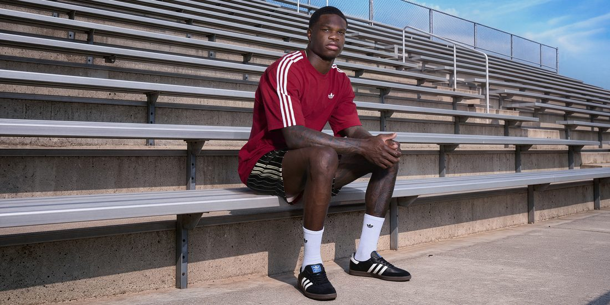
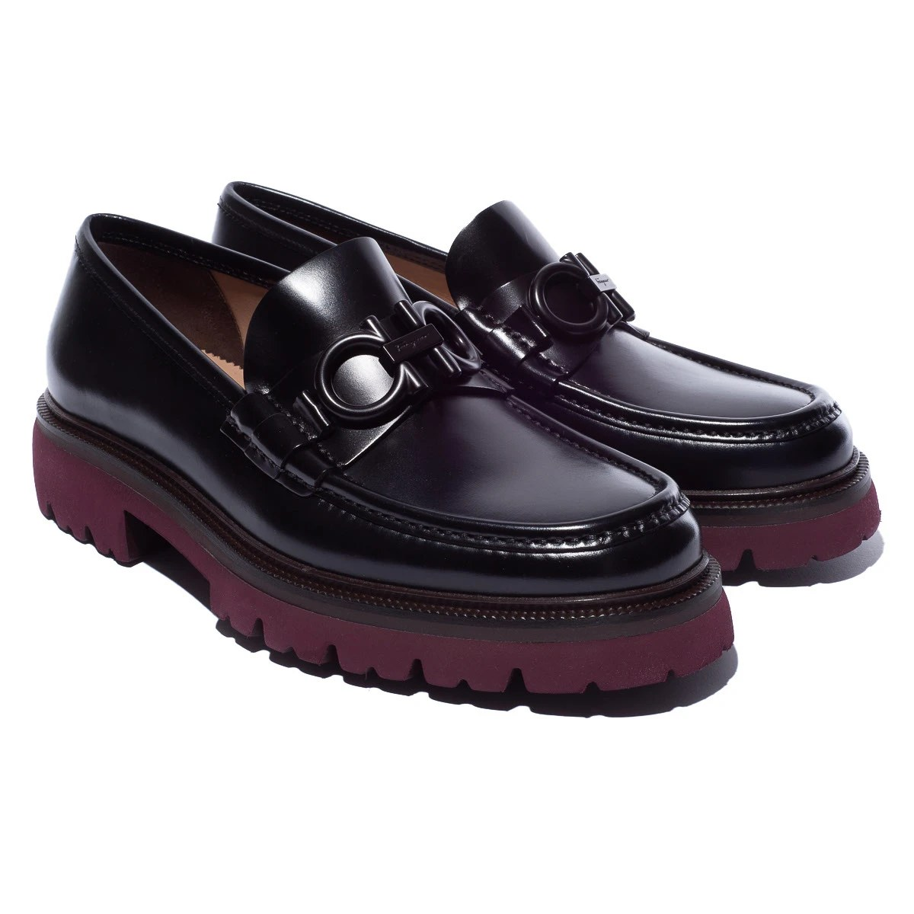
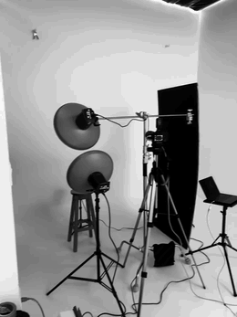

MILO STUDIO™ — Production, Retouching & CGI
Bogotá, Colombia
MILO Studio assembles the stylists, casting, and retouchers your campaign needs — one brief, one accountable team.
Beauty, fashion, and product retouching to editorial standard — color grading and finishing that stays true to brand identity.

High-volume, consistent product and model imagery built for online retail, without losing quality control.

On-set direction and full crew management, from casting to final capture.

Concept, styling, and art direction that carries a campaign from brief to finished asset.
A selection of commercial campaigns across footwear, fashion, and lifestyle brands.


Instead of a conventional grid, the editorial archive is presented as a shelf of publications fanned out for browsing. Click a cover to bring it forward.
MILO Studio is led by Camilo Márquez Villegas, an art director and fashion photographer with ten years producing campaigns for luxury and lifestyle brands across Latin America and Europe.
Clients brief MILO once. We assemble the stylists, makeup artists, models, and retouchers the project actually calls for, and manage them as one accountable studio — from concept to delivery.
Beauty, fashion, and product retouching to editorial standard — color grading and finishing that stays true to brand identity.
Blender and Cinema 4D modelling, lighting and lookdev — built as its own image, or matched into a photograph so the two read as one shot.
High-volume, consistent product and model imagery built for online retail, without losing quality control.
No fixed package. Tap the roles your project needs and see the team MILO puts together for it.
This is how every MILO project starts: a briefing, then a team sized to it — never more than the project needs, never less than it takes to do it right.
Get a QuoteSend over the brand, the brief, and the timeline. We'll come back with the team and the plan.
Fastest way to reach the studio directly — tell us your brand and what you're producing.